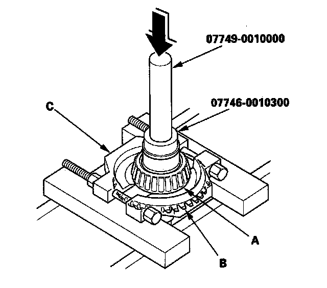

Transfer Hypoid Drive Gear Bearing Replacement
Transfer Hypoid Drive Gear Bearing ReplacementSpecial Tools Required
^ Driver 07749-0010000
^ Attachment, 42 x 47 mm 07746-0010300
^ Attachment, 40 x 50 mm 07LAD-PW50601
1. Remove the tapered roller bearing (A) from the transfer hypoid drive gear (B) using the driver, the attachment (42 x 47 mm) bearing separator (C) and the press.

2. Install the new tapered roller bearing (A) on the transfer hypoid drive gear (B) using the driver, the attachment (42 x 47 mm) the attachment (40 x 50 mm) and the press.